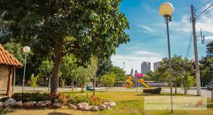
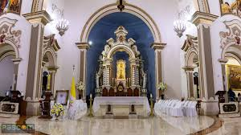

Pontos turisticos:
Horto floretal Limeira:
Um verdadeiro oásis natural dentro da cidade, o Horto Florestal é ideal para quem busca tranquilidade, contato com a fauna e flora nativas e atividades ao ar livre. Com trilhas ecológicas, espaços para meditação, lagos com peixes e uma rica vegetação de espécies nativas e exóticas, o local também é bastante utilizado para educação ambiental e pesquisa. O horto abriga eventos educativos e visitas guiadas para escolas, promovendo conscientização ecológica.
Hípica:
Um dos espaços mais queridos pelos limeirenses, o Parque Cidade é ideal para passeios em família, prática de esportes ou simplesmente para relaxar ao ar livre. Conta com ciclovias bem sinalizadas, pista de caminhada arborizada, aparelhos de ginástica ao ar livre e diversos playgrounds para crianças. O lago central é um dos pontos de destaque do parque, onde é possível observar aves e aproveitar a paisagem.
Teatro Vitória:
Um dos principais equipamentos culturais da cidade, o Teatro Vitória tem papel fundamental na cena artística de Limeira. Com capacidade para cerca de 680 pessoas, o espaço recebe espetáculos de teatro, dança, música, stand-up e apresentações escolares ao longo do ano. Sua arquitetura combina o clássico com toques contemporâneos, e a localização central o torna acessível para todos.
Catedral nossa senhora das dores:
Considerada o coração religioso de Limeira, a Catedral Nossa Senhora das Dores é um dos marcos históricos e culturais mais importantes da cidade. Fundada em 1826, ela foi construída junto com a formação do antigo povoado que originou Limeira. A atual edificação, imponente e bem preservada, é o terceiro templo no local e combina linhas clássicas com elementos modernos.
